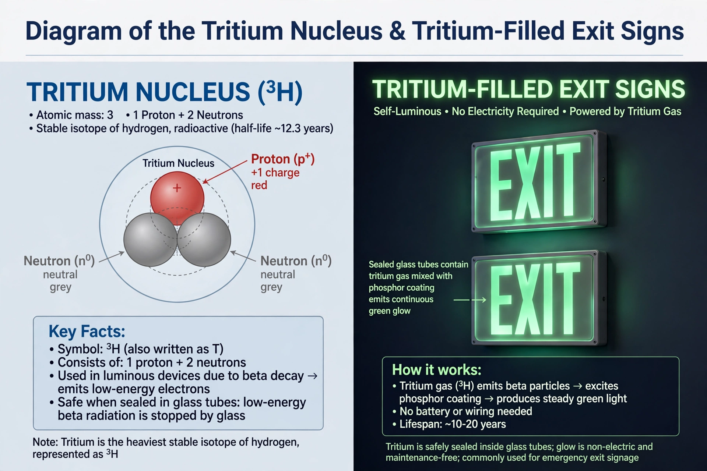

Tritium
Tritium (from Greek τρίτος, "third") or hydrogen-3 (symbol 3H or T) is a rare and radioactive isotope of hydrogen, with a nucleus (a triton) containing one proton and two neutrons. It decays by beta emission into helium-3 with a half-life of about 12.3 years.

| Tritium | |
|---|---|
| Symbol | 3H (T) |
| Half-life | 12.32 years |
| Decay mode | Beta decay to helium-3 |
| Natural abundance | Trace (cosmogenic) |
Occurrence and production
Tritium occurs naturally in trace amounts, produced when cosmic rays strike nitrogen and oxygen nuclei in the upper atmosphere; it enters the water cycle as tritiated water. Most tritium is made artificially in nuclear reactors — by neutron bombardment of lithium-6 — or extracted from the heavy water of CANDU reactors. Because of its half-life, global inventories are limited, and tritium is traded in gram quantities at high cost.
Uses
Tritium is a key fuel for nuclear fusion: combined with deuterium it gives the easiest fusion reaction to ignite, and it will fuel the ITER experiment. It is also used in thermonuclear weapons, in self-powered lighting (gaseous tritium light sources, whose beta particles excite phosphor — used in watch dials, gun sights, and exit signs), and as a tracer in scientific and medical research. Because its low-energy beta particles cannot penetrate skin, tritium is a hazard mainly when ingested or inhaled; releases of tritiated water from reactor sites remain a subject of public debate.